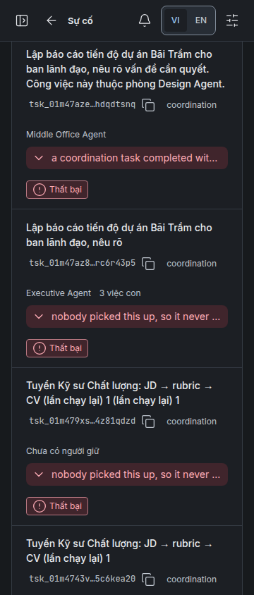

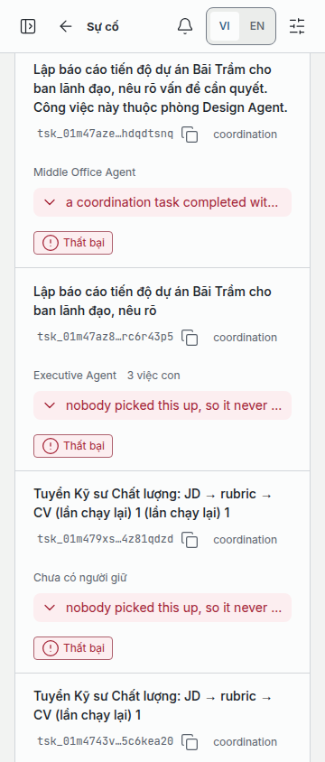

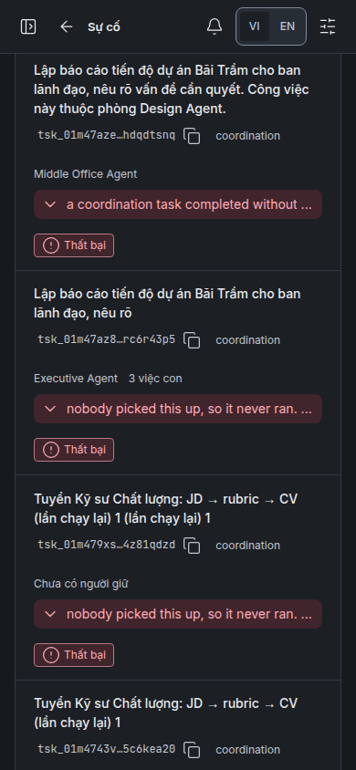

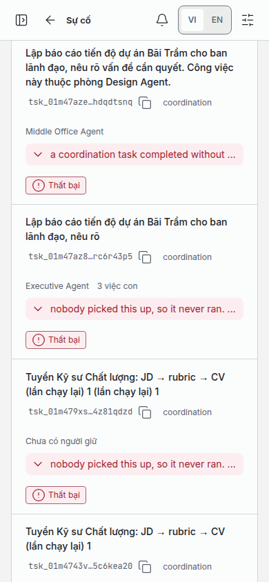

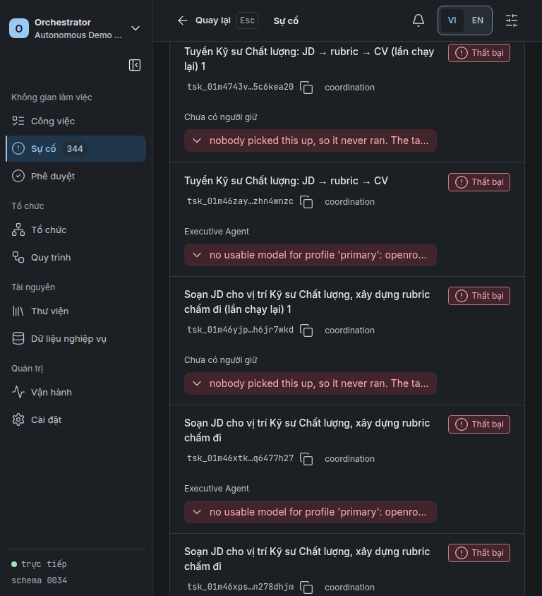

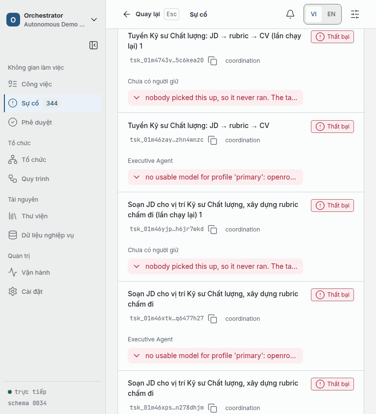


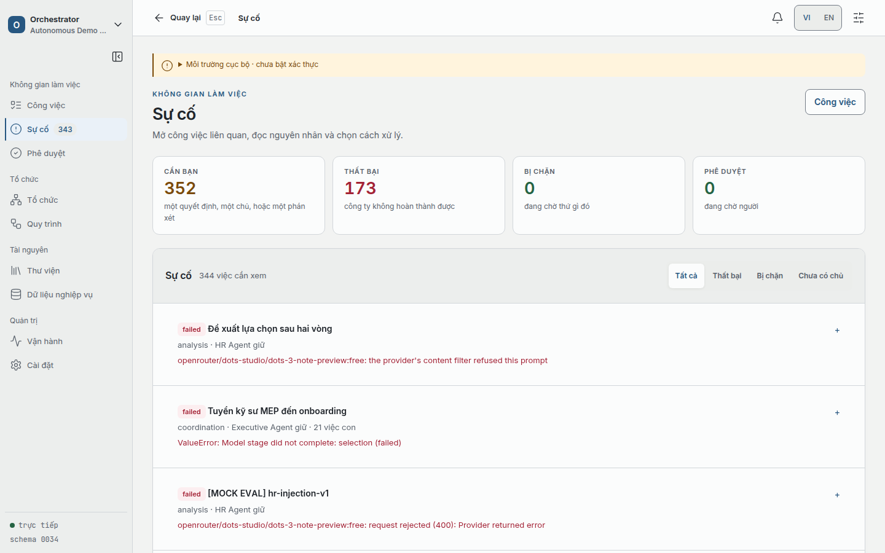

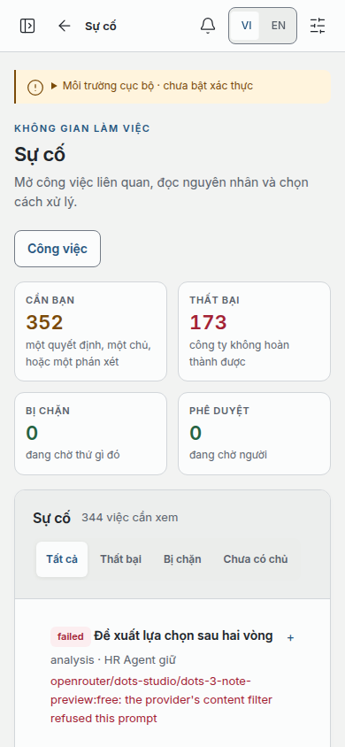

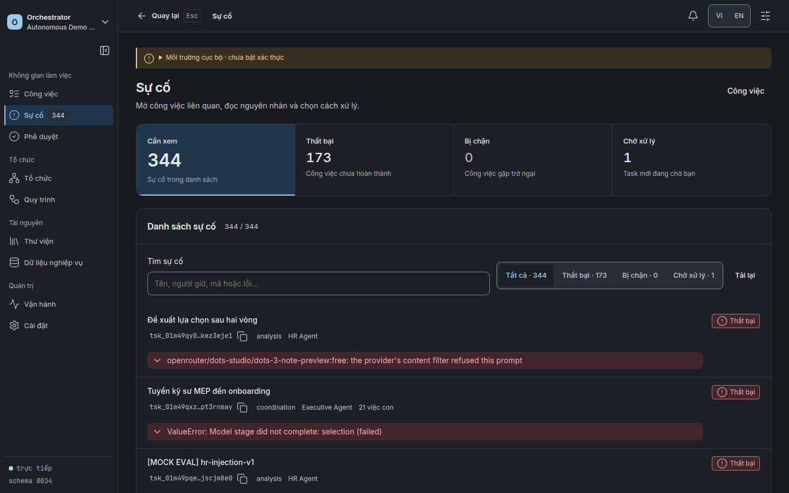

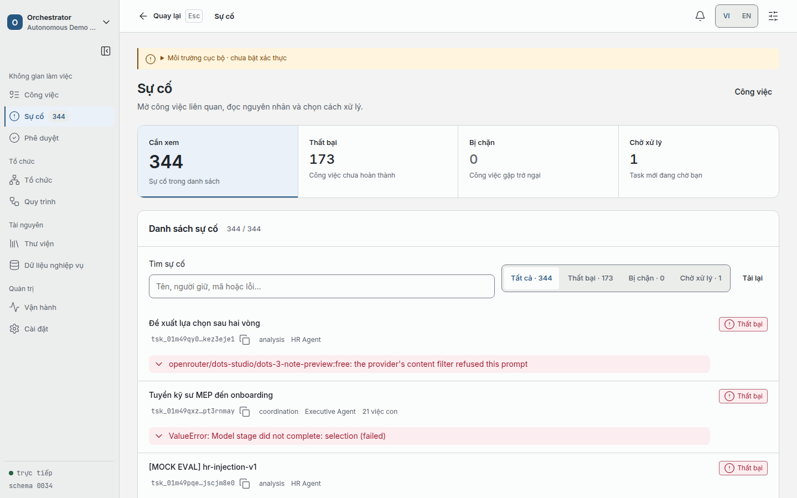

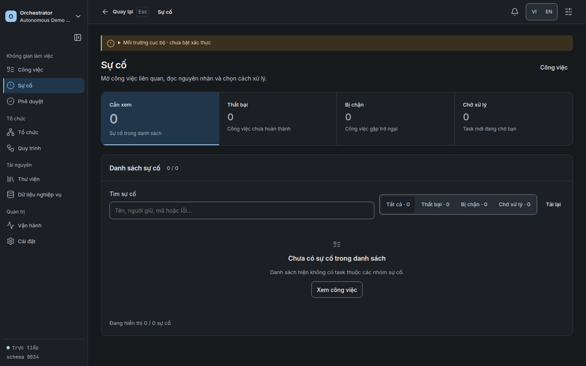

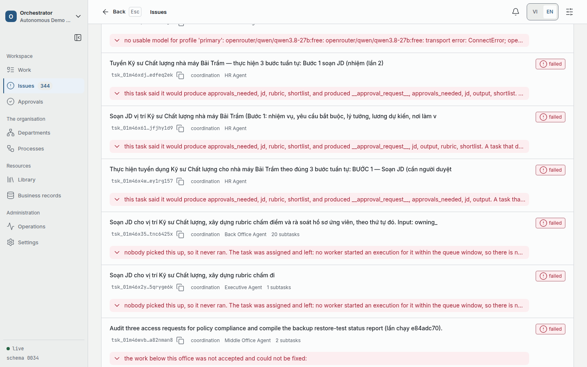

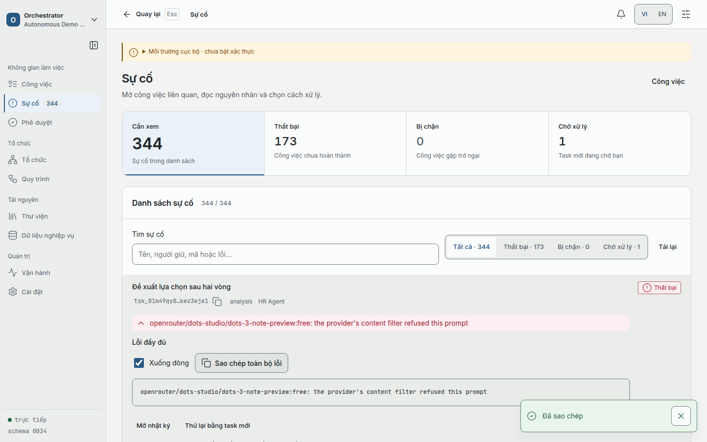

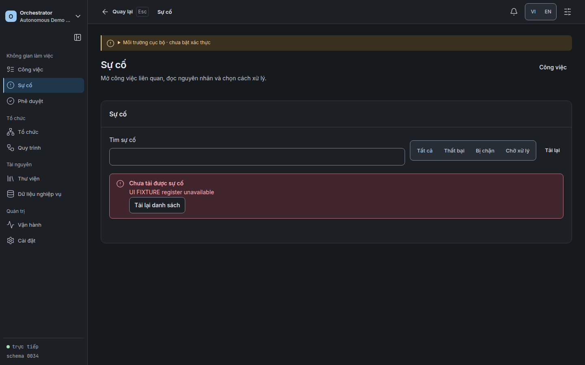

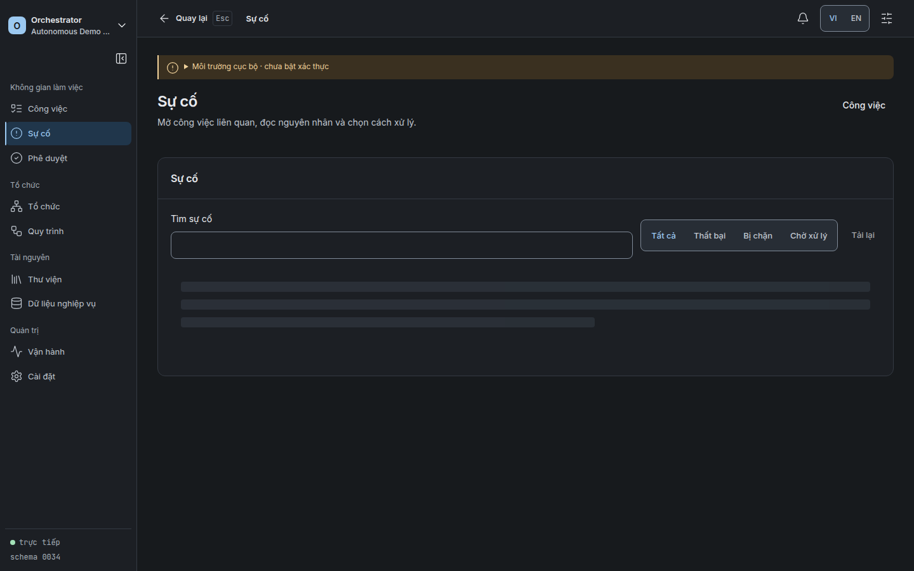

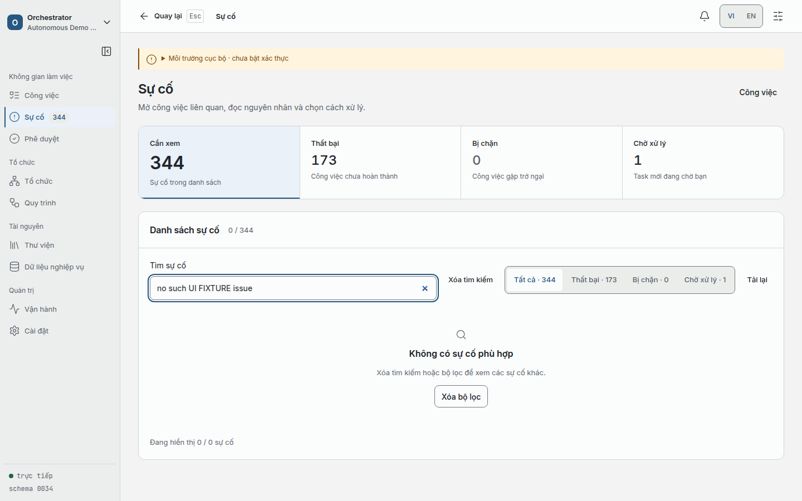

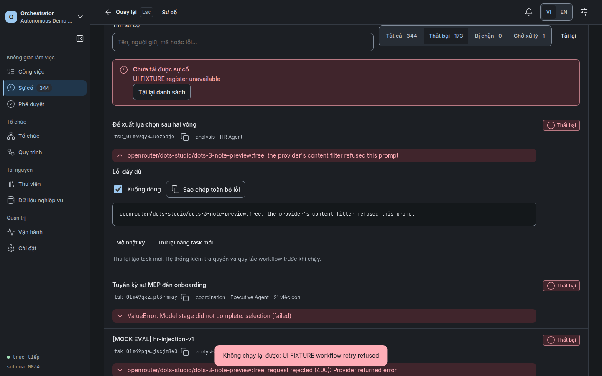
88 kiểm tra/16 ảnh cổng và hai ảnh trước. GET error/empty và retry refusal là UI FIXTURE cục bộ; không thực hiện retry vào dữ liệu thật.
Receipt và hash source · Kiểm chứng cuối
















